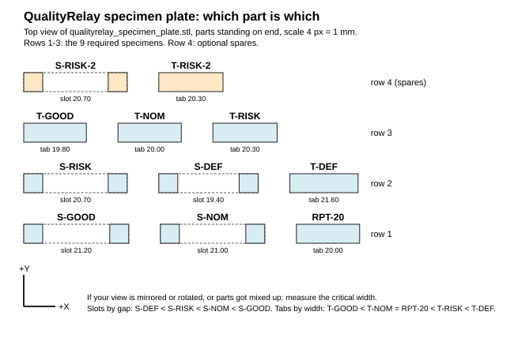

Every connection on the board
| ID | jumper type | colour | from | to | purpose |
|---|
How to tell jumpers apart
Click any labeled part
Exit and diverter, side view (to scale)
Bench test protocol
Run the phases in order. Do not start a phase until every test in the previous phase is PASS. Results are saved in this browser only (local storage) until you export them. Nothing here is pre-filled; NOT RUN is the default.
What to print, and on which printer
Specimens on the Formlabs printer (resin, more accurate): one file with all 11 parts. Sorter on the Bambu Lab printer (PLA): swivel chute, hub, and servo tower. Track, carrier, and bins can stay cardboard, wood, or boxes.
Formlabs: all specimens in one print
File: examples/cad/formlabs/qualityrelay_specimen_plate.stl. It holds the 9 required specimens plus spares S-RISK-2 and T-RISK-2: 11 separate solids, 106 × 54 × 60 mm, so it fits every Formlabs platform (the smallest are 145 × 145 mm on Form 2/3/3+ and 200 × 125 mm on Form 4).

Print this map (examples/cad/formlabs/plate_map.svg) and keep it next to the printer. The slots and tabs look almost identical once printed.
- Open the file in PreForm (it accepts STL, OBJ, 3MF, and FORM). Units: millimetres.
- Optional: right-click the model and choose Separate Bodies (PreForm 3.60 or newer) to get 11 separate models. If PreForm reports broken models, let it repair them; every solid in the file is closed.
- Do not use auto-orient. Every part already stands on its end, so PreForm puts supports only on the bottom end faces. Supports on a long side face or inside a slot would change exactly the width you measure.
- Generate supports with the default settings. Check that no touchpoint lands on a long side face or inside a slot.
- Resin: Grey or White standard resin, 0.1 mm layers. Avoid Clear (hard for the camera) and Black (no contrast on the dark pad).
- After printing: wash, dry, and post-cure with the settings for your resin. Wear nitrile gloves; uncured resin irritates skin.
- Before cutting parts off the supports, write each label on its part with a permanent marker, using the map.
- Remove the supports and sand only the end faces. Never sand the long faces or inside the slots. Measure after post-curing, at room temperature.
Bambu Lab: servo sorter (PLA)
file (examples/cad/sorter/) | what it is | size, mm |
|---|---|---|
| swivel_chute.stl | Sloped channel the specimen slides down. 76 mm inside (wider than the 68.6 mm specimen diagonal, so a turned part cannot jam), 15 mm walls, rounded inlet that catches the part at every chute angle, 9 mm hole for the horn screw. | 125 × 79 × 17 |
| chute_hub.stl | 30° wedge glued under the chute at the hole. It turns the flat print into a 30° slope. | Ø 40 × 27 |
| servo_tower.stl | Stands on the table and holds the SG90 shaft-up. Tabs rest on the end walls; windows let the cable out. | 70 × 50 × 66 |
Print settings
- PLA, 0.2 mm layers, 3 walls, 15–20% infill. Print in the orientation the files are in; no supports, no brim needed. All three fit on one plate, even on an A1 mini: drag them into Bambu Studio together and press Arrange.
- Chute: the floor's top surface is the sliding surface. Ironing (top surfaces) makes it smoother; optional.
- Bambu Studio may show the chute and tower as several overlapping solids; it merges them when slicing.
Assemble
- Glue the hub under the chute floor with CA glue (superglue) or hot glue: holes lined up (push a pencil or 6 mm rod through both), thick side of the hub towards the rounded inlet. Stand it on the hub on a table: the walls must be level side to side and the floor must slope down to the open end.
- Glue the SG90's two-arm horn flat on the hub's bottom face, centre hole over the hole, arms along the chute.
- Put the servo in the tower from the top, shaft towards the front (the bins), long end towards the board. Drive the two tab screws from the servo bag into the end-wall tops (or hot-glue the tabs).
- Stand the tower on the table with the servo shaft 45 mm in front of the board's end face, on the track centre line. Tape or hot-glue the base down.
- Wire the servo (tab 1). Boot the ESP32: the sketch moves the servo to 90° (HOLD). Switch servo power off.
- Press the horn (with hub and chute) onto the servo shaft with the chute pointing straight along the track. Drive the horn screw through the holes.
- Board top must be 120–130 mm above the table (books or blocks). At HOLD, the chute's rounded back edge must sit at least 4 mm below the carrier floor.
- Bins: three trays at most 35 mm high and at least 80 mm deep, near edge about 80 mm from the servo axis (just past the chute outlet), one in each chute direction.
- Run phase M of the bench test.
Designed from published SG90 sizes; clones differ by a millimetre or two, which only changes how far the specimen drops into the chute. Not printed or tested yet. Change the numbers at the top of examples/cad/generate_sorter_stl.py and re-run it to adjust; it checks the clearances before writing files.
Specimens on the plate
| label | file | CAD width | used in |
|---|---|---|---|
| S-GOOD | slot_good_21p20 | 21.20 mm slot | Run A |
| T-GOOD | tab_good_19p80 | 19.80 mm tab | Run A |
| S-RISK (+ spare S-RISK-2) | slot_risk_20p70 | 20.70 mm slot | Run B |
| T-RISK (+ spare T-RISK-2) | tab_risk_20p30 | 20.30 mm tab | Run B |
| T-NOM | tab_nominal_20p00 | 20.00 mm tab | Run C (add a disclosed sticker marker), mate for S-DEF |
| S-NOM | slot_nominal_21p00 | 21.00 mm slot | reference image, mate for T-DEF |
| RPT-20 | repeatability_bar_20p00 | 20.00 mm bar | repeatability test R1 |
| S-DEF | slot_defect_19p40 | 19.40 mm slot, 1.60 mm undersize | Run D |
| T-DEF | tab_defect_21p60 | 21.60 mm tab, 1.60 mm oversize | Run D |
The plate uses clean single-body copies with the same dimensions as examples/cad/stl/. The original slot files are three touching boxes each, which resin slicers can report as broken models. The originals stay unchanged. Rebuild the plate with python3 examples/cad/generate_specimen_stl.py plate.
Printing specimens on an FDM printer instead: PLA, flat on the bed as in examples/cad/stl/, 0.2 mm layers, no brim, no scaling, and measure at mid-height (the first layer prints wider).
Which slot fits which tab (CAD clearance, mm)
| slot \ tab | T-GOOD 19.80 | T-NOM 20.00 | T-RISK 20.30 | T-DEF 21.60 |
|---|---|---|---|---|
| S-GOOD 21.20 | +1.40 | +1.20 | +0.90 | −0.40 |
| S-NOM 21.00 | +1.20 | +1.00 | +0.70 | −0.60 |
| S-RISK 20.70 | +0.90 | +0.70 | +0.40 tight | −0.90 |
| S-DEF 19.40 | −0.40 | −0.60 | −0.90 | −2.20 |
Clearance = slot gap − tab width. Positive fits by design; negative is interference and cannot fit. Values measured from the STL triangles with python3 examples/cad/generate_specimen_stl.py check. Printed parts differ from CAD, so measure and fit-test them (bench test phase S).
Run D: seeded defect pair
- Use S-DEF with T-NOM (or S-NOM with T-DEF, or S-DEF with T-DEF).
- The caliper reading is far outside nominal and the tab does not slide in: fit FAIL.
- A person confirms the nonconformance, then you stage R and the part goes to REJECT. Without that confirmation, the route is HOLD.
- Call them seeded defect specimens. They are designed undersize/oversize, not real manufacturing defects.
Other fixtures (no CAD in the repository; make by hand)
| part | size | how |
|---|---|---|
| Carrier | ≈ 75 × 45 mm plate, 2–3 mm thick, 3–5 mm lip on 3 sides, front open, arrow on top | Foam board or thick card with glued strips |
| Track | Two rails 700–800 mm long, 10–20 mm high; clear width = carrier width + 2–3 mm | Straight wood strips or aluminium angle glued to the board |
| Caliper registration blocks | 2 small L-blocks ≈ 20 × 20 × 10 mm | Wood offcuts or a tape outline |
| Webcam B arm clip | Holds the webcam on a wood strip | Zip ties, or the webcam's own clip |
| Stop pins (gravity version only) | 3 pins ≈ 4 mm diameter × 40 mm | Bolts, nails, or wooden dowels |
What to use, what to get, what to leave in the box
Based on what you have: two ESP32 boards, the ELEGOO kit with the Power MB V2, two Logitech webcams, a laptop, and a 3D printer. Optional items are skipped. You said you can find cables, so they are listed without models.